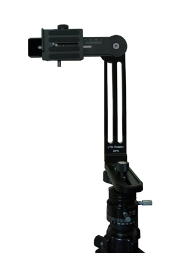
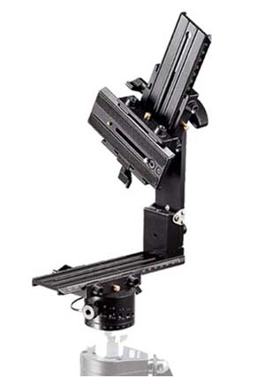
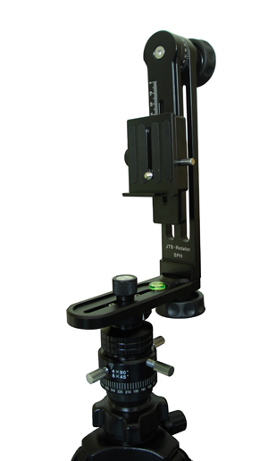
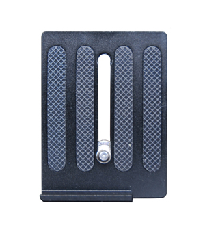
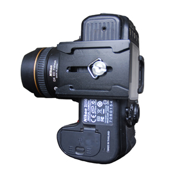
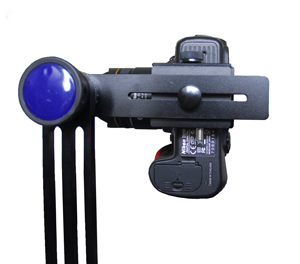
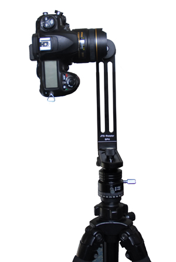

全景云台
360全景拍摄硬件配备-全景云台
全景云台：是区别于普通的相机云台的高端拍摄设备，如JTS-Rotator，Manfutu 303SPH此类云台都属于全景云台，如左图所示为JTS-Rotator。称其为全景云台的主要原因，是因为此类云台都具备两大功能：1.可以调节相机节点在一个纵轴线上转动；2.可以让相机在水平面上进行水平转动拍摄；从而达到使相机拍摄节点在三维空间中的一个固定位置进行拍摄，保证相机拍摄出来的图像可以使用造景师软件进行三维全景的拼合。【全景云台对于拍摄全景的作用】
云台就是承载相机等拍摄设备的一个装置，全景云台则是专门为拍摄全景而用的云台。全景云台的关键作用就在于将镜头节点固定在了云台的旋转轴心上，这样就可以保证在旋转相机拍摄的时候每张图像都是在一个点上拍摄，拼合的全景图就会很完美。【全景云台的工作原理】
首先，全景云台具备一个具有360度刻度的水平转轴，可以安装在三脚架上，并对安装相机的支架部分可以进行水平360度的旋转；其次，全景云台的支架部分可以对相机进行前面的移动，从而达到适应不同相机宽度的完美效果，由于相机的宽度直接影响到全景云台节点的位置，所以如果可以进行调节相机的水平移动位置，那么基本就可以称之为全景云台；【当前主流的全景云台】
|  |

|
| JTS-Rotator SPH |
Manfrotto 303SPH |
【全景云台的操作】
以杰图定制云台JTS-Rotator SPH为例
1. 首先将云台的转轴及支架部分安装于三脚架之上如图所示。

2. 将扩装板（左图所示的）与数码单反相机进行安装（右图所示）。
 
3. 将数码单反相机安装至支架上（下图所示）。

4. 安装后的效果（下图所示）。
